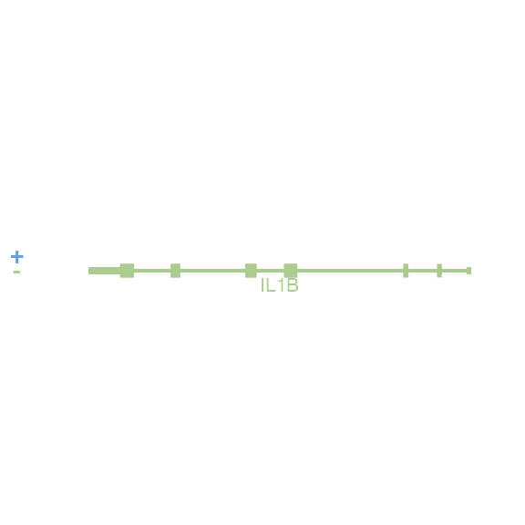

Introduction to BentoBox
Nicole Kramer, Eric S. Davis, Craig Wenger, Sarah Parker, Erika Deoudes, and Douglas H. Phanstiel
2021-04-20
Source:vignettes/introduction_to_bentobox.Rmd
introduction_to_bentobox.RmdOverview

BentoBox is a coordinate-based, genomic visualization package for R. Using grid graphics, BentoBox empowers users to programatically and flexibly generate multi-panel figures. Tailored for genomics, BentoBox allows users to visualize large, complex genomic datasets while providing exquisite control over the arrangement of plots.
BentoBox functions can be grouped into the following categories:
-
Page layout functions:
Functions for creating
BentoBoxpage layouts, drawing, showing, and hiding guides, as well as placing plots on the page. -
Reading functions:
Functions for quickly reading in large biological datasets.
-
Plotting functions:
Contains genomic plotting functions, functions for placing ggplots and base plots, as well as functions for drawing simple shapes.
-
Annotation functions:
Enables users to add annotations to their plots, such as legends, axes, and scales.
-
Meta functions:
Functions that display
BentoBoxproperties, or operate on otherBentoBoxfunctions.
This vignette provides a best-practices guide for utilizing BentoBox. It begins with a Quick Start section that outlines usage examples for reading in and plotting the most commonly used genomic data. Then the following sections explore how BentoBox works in more detail, highlighting helpful topics that showcase the capabilities of BentoBox. For detailed usage of each function, see the function-specific reference examples with ?function() (e.g. ?bb_plotBedpe()).
Quick start
How to quickly plot
BentoBox plotting functions contain 4 types of arguments:
Data reading argument (
data)Locus arguments (
chrom,chromstart,chromend,assembly)Placement arguments (
x,y,width,height,just,default.units, …) that define where each plot resides on abb_page.Attribute arguments that affect the data being plotted or the style of the plot (
palette,norm,fontcolor, …). These are typically different for each function.
The quickest way to plot data is to omit the placement arguments. This will generate a BentoBox plot that fills up the entire graphics window. The only arguments that are required are the data arguments and locus arguments. The examples below show how to quickly plot different types of genomic data with plot defaults and included data types. To use your own data, replace the data argument with either a path to the file or an R object.
Hi-C matricies
## Load BentoBox
library(BentoBox)
## Load example Hi-C data
data("bb_imrHicData")
## Quick plot Hi-C data
bb_plotHicSquare(data = bb_imrHicData,
chrom = "chr21", chromstart = 28000000, chromend = 30300000)
Signal tracks
## Load BentoBox
library(BentoBox)
## Load example signal data
data("bb_imrH3K27acData")
## Quick plot signal data
bb_plotSignal(data = bb_imrH3K27acData,
chrom = "chr21", chromstart = 28000000, chromend = 30300000)
Gene tracks
## Load BentoBox
library(BentoBox)
## Load hg19 genomic annotation packages
library(TxDb.Hsapiens.UCSC.hg19.knownGene)
#> Warning: package 'BiocGenerics' was built under R version 4.0.5
#> Warning: package 'GenomeInfoDb' was built under R version 4.0.5
library(org.Hs.eg.db)
## Quick plot genes
bb_plotGenes(assembly = "hg19",
chrom = "chr21", chromstart = 28000000, chromend = 30300000)
Alternatively, if you want to plot around a particular gene rather than a genomic region you can specify gene and geneBuffer using the bb_params() meta function. If geneBuffer is not included, the default buffer adds (gene length) / 2 base pairs to the ends of the gene coordinates.
## Load BentoBox
library(BentoBox)
## Load hg19 genomic annotation packages
library(TxDb.Hsapiens.UCSC.hg19.knownGene)
library(org.Hs.eg.db)
## Quick plot genes
bb_plotGenes(params = bb_params(gene = "IL1B", geneBuffer = 1000, assembly = "hg19"))
GWAS manhattan plots
## Load BentoBox
library(BentoBox)
## Load example gwas data
data("bb_gwasData")
head(bb_gwasData)
#> chr pos p snp LD
#> 1 chr1 34294726 0.6835307 rs10914788 <NA>
#> 2 chr1 236591003 0.9930270 rs634626 <NA>
#> 3 chr1 193391538 0.7216855 rs12043960 <NA>
#> 4 chr1 7554435 0.1002769 rs1725271 <NA>
#> 5 chr1 82022757 0.9852280 rs12090221 <NA>
#> 6 chr1 10246129 0.4317934 rs2180185 <NA>
## Quick plot gwas data
bb_plotManhattan(data = bb_gwasData,
chrom = "chr21", chromstart = 28000000, chromend = 30300000,
ymax = 1.1, cex = 0.20)
How to add plot annotations
To add annotation features to a bb_plot object, or to view multiple bb_plot objects simultaneously, we must:
- Create a BentoBox coordinate page with
bb_pageCreate(). - Provide a
bb_plotobject to theplotargument (for annotation). - Provide values for the placement arguments (
x,y,width,height,just,default.units) inbb_plotfunctions.
As an annotation example, here we add a color scale and genome label annotation:
## Load BentoBox
library(BentoBox)
## Load example Hi-C data
data("bb_imrHicData")
## Create a BentoBox page
bb_pageCreate(width = 3.25, height = 3.25, default.units = "inches")
## Plot Hi-C data with placing information
hicPlot <- bb_plotHicSquare(data = bb_imrHicData,
chrom = "chr21", chromstart = 28000000, chromend = 30300000,
x = 0.25, y = 0.25, width = 2.5, height = 2.5, default.units = "inches")
## Add color scale annotation
bb_annoHeatmapLegend(plot = hicPlot,
x = 2.85, y = 0.25, width = 0.1, height = 1.25, default.units = "inches")
## Add genome label annotation
bb_annoGenomeLabel(plot = hicPlot,
x = 0.25, y = 2.75, width = 2.5, height = 0.25, default.units = "inches")
## Hide plot gridlines
bb_pageGuideHide()For more information about how to place plots and annotations on a bb_page check out the section Arranging bb_plot Objects.
The BentoBox page
BentoBox uses a coordinate-based plotting system to define the size and location of plots. This system makes the plotting process intuitive and absolute, meaning that plots cannot be squished and stretched based on their relative sizes. This also allows for precise control of the size of each visualization and the location of all plots, annotations, and text.
All BentoBox page functions begin with the bb_page prefix.
Users can create a page in their preferred size and unit of measurement using bb_pageCreate(). Within this function the user can also set gridlines in the vertical and horizontal directions with xgrid and ygrid, respectively. By default these values are set to 0.5 of the unit. In the following example we demonstrate creating a standard 8.5 x 11 inch page:
bb_pageCreate(width = 8.5, height = 11, default.units = "inches")
Or we could create a smaller sized page in a different set of units with different gridlines:
bb_pageCreate(width = 8, height = 8, xgrid = 1, ygrid = 1, default.units = "cm")
We could turn off gridlines entirely by setting xgrid and ygrid to 0:
bb_pageCreate(width = 3, height = 3, xgrid = 0, ygrid = 0, default.units = "inches")
We can also remove all guidelines from the plot once we are finished by using the bb_pageGuideHide() function:
## Create page
bb_pageCreate(width = 3, height = 3, default.units = "inches")
## Remove guides
bb_pageGuideHide()Arranging plot objects
In BentoBox all plot objects are boxes, with user defined positions and sizes. All plot objects can be placed on a bb_page using the placement arguments (e.g. x, y, width, height, just, default.units, …). The bb_page sets the origin of the plot at the top left corner of the page. By default, the x and y arguments place the top-left corner of a plot in the specified position on the bb_page while the width and height arguments define the size of the plot.
For example, if users want the top-left corner of their plot to be 0.5 inches down from the top of the page and 0.5 inches from the left…

and the plot to be 2 inches wide and 1 inch tall…

BentoBox can make the plot with these exact dimensions:
## Load libraries
library(BentoBox)
## Create page
bb_pageCreate(width = 3, height = 3, default.units = "inches")
## Plot rectangle
bb_plotRect(x = 0.5, y = 0.5, width = 2, height = 1,
just = c("left", "top"), default.units = "inches")
BentoBox also provides the helper function bb_pagePlotPlace() for placing plot objects that have been previously defined:
## Load libraries
library(BentoBox)
## Load data
data("bb_imrH3K27acData")
## Create page
bb_pageCreate(width = 3, height = 3, default.units = "inches")
## Define signal plot
signalPlot <- bb_plotSignal(data = bb_imrH3K27acData,
chrom = "chr21", chromstart = 28000000, chromend = 30300000,
draw = FALSE)
## Place plot on bb_page
bb_pagePlotPlace(plot = signalPlot,
x = 0.5, y = 0.5, width = 2, height = 1,
just = c("left", "top"), default.units = "inches")
This gives the users additional flexibility in how they create their R scripts.
Using the just parameter
While the x, y, width, and height parameters are relative to the top-left corner of the plot by default, the just parameter provides additional flexibility by allowing users to change the reference point. The just parameter accepts a character or numeric vector of length 2 describing the horizontal and vertical justification (or reference point), respectively.
The just parameter can be set using character strings “left”, “right”, “center”, “bottom” and “top”:
#> Warning in if (grepl("b", bb_hguide$y) == TRUE) {: the condition has length > 1
#> and only the first element will be used
Or it can be set using numeric values where 0 means left/bottom, 1 means right/top, and 0.5 means center:
#> Warning in if (grepl("b", bb_hguide$y) == TRUE) {: the condition has length > 1
#> and only the first element will be used
This is particularly useful when an object needs to be aligned in reference to another plot object or page marker. For example, in the Hi-C plot below we might want to align the top-right corner of the heatmap legend to the 3 inch mark. There is no need to calculate the top-left position (i.e. 3 inches - (legend width)) to determine where to place the heatmap legend. Instead we can change the just parameter to just=c('right', 'top'):
## Load BentoBox
library(BentoBox)
## Load example Hi-C data
data("bb_imrHicData")
## Create a BentoBox page
bb_pageCreate(width = 3.25, height = 3.25, default.units = "inches")
## Plot Hi-C data with placing information
hicPlot <- bb_plotHicSquare(data = bb_imrHicData,
chrom = "chr21", chromstart = 28000000, chromend = 30300000,
x = 0.25, y = 0.25, width = 2.5, height = 2.5, default.units = "inches")
## Add color scale annotation with just = c("right", "top")
bb_annoHeatmapLegend(plot = hicPlot,
x = 3, y = 0.25, width = 0.1, height = 1.25,
just = c("right", "top"), default.units = "inches")
Plotting multi-omic data
BentoBox makes it easy to create reproducible, publication-quality figures from multi-omic data. Since each plot can be placed in exactly the desired location, users can stack multiple types of genomic data so that their axes and data are correctly aligned. In this section we will show some examples of plotting multi-omic data, how the bb_params object can facilitate this process, and how to correctly normalize stacked signal track data.
In the following example, we plot the same genomic region (i.e. chr21:28000000-30300000) represented in Hi-C data, loop annotations, signal track data, GWAS data, all along a common gene track and genome label axis:
## Load BentoBox
library(BentoBox)
## Load example data
data("bb_imrHicData")
data("bb_bedpeData")
data("bb_imrH3K27acData")
data("bb_gwasData")
## Create a BentoBox page
bb_pageCreate(width = 3, height = 5, default.units = "inches")
## Plot Hi-C data in region
bb_plotHicSquare(data = bb_imrHicData,
chrom = "chr21", chromstart = 28000000, chromend = 30300000,
x = 0.5, y = 0.5, width = 2, height = 2,
just = c("left", "top"), default.units = "inches")
## Plot loop annotations
bb_plotBedpeArches(data = bb_bedpeData,
chrom = "chr21", chromstart = 28000000, chromend = 30300000,
x = 0.5, y = 2.5, width = 2, height = 0.25,
just = c("left", "top"), default.units = "inches",
fill = "black", linecolor = "black", position = "bottom")
## Plot signal track data
bb_plotSignal(data = bb_imrH3K27acData,
chrom = "chr21", chromstart = 28000000, chromend = 30300000,
x = 0.5, y = 2.75, width = 2, height = 0.5,
just = c("left", "top"), default.units = "inches")
## Plot GWAS data
bb_plotManhattan(data = bb_gwasData,
chrom = "chr21", chromstart = 28000000, chromend = 30300000,
ymax = 1.1, cex = 0.20,
x = 0.5, y = 3.5, width = 2, height = 0.5,
just = c("left", "top"), default.units = "inches")
## Plot gene track
library(TxDb.Hsapiens.UCSC.hg19.knownGene)
library(org.Hs.eg.db)
bb_plotGenes(chrom = "chr21", chromstart = 28000000, chromend = 30300000,
x = 0.5, y = 4, width = 2, height = 0.5,
just = c("left", "top"), default.units = "inches")
## Plot genome label
bb_plotGenomeLabel(chrom = "chr21", chromstart = 28000000, chromend = 30300000,
x = 0.5, y = 4.5, length = 2, scale = "Mb",
just = c("left", "top"), default.units = "inches")
Using the bb_params object
The bb_params() function creates a bb_params object that can contain any argument from BentoBox functions.
We can recreate and simplify the multi-omic plot above